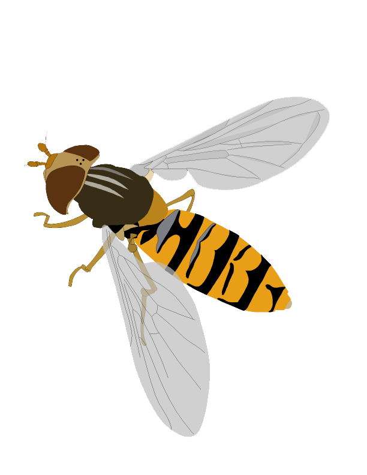

Profile & Contact

平岩 将良
ひらいわ まさよし
Masayoshi K. Hiraiwa
所属 神戸大学大学院人間発達環境学研究科 生物多様性研究室 & 源研究室
専門分野 生態学（特に送粉生態学・群集生態学）
好きな生き物 ハナアブ
E-mail masayoshi.hiraiwa (あっと) gmail.com
略歴
2006.04-2010.03
東邦大学 理学部生物学科
2010.04-2012.03
東邦大学大学院 理学研究科生物学専攻 博士前期課程
2012.04-2013.03
神戸大学大学院 人間発達環境学研究科 研究生
2013.04-2017.09
神戸大学大学院 人間発達環境学研究科 博士後期課程
2017.10-2018.03
神戸大学大学院 人間発達環境学研究科 学術研究員
2018.04-2018.09
神戸大学大学院 人間発達環境学研究科 研究員
2018.10-2019.03
神戸大学大学院 人間発達環境学研究科 学術研究員
2019.04-
農研機構 生物機能利用研究部門 契約研究員
Top